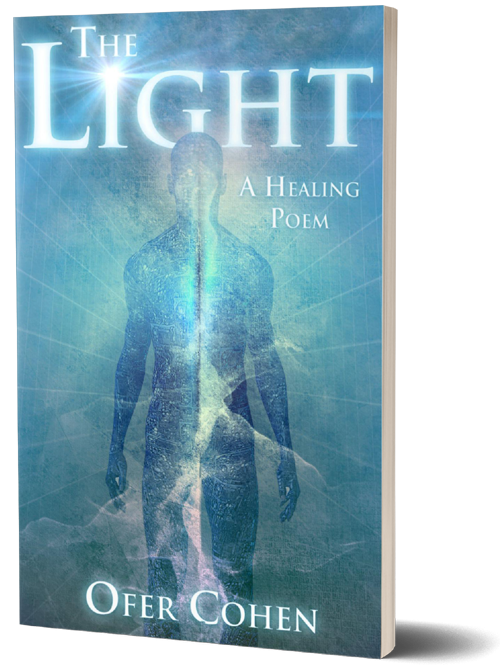

<div class="books-container">
	<div class="books img-hover-zoom-books">
			<div *ngIf="booksImgFlag; then thenBlock else elseBlock" ></div>
	        <ng-template #thenBlock></ng-template>
	        <ng-template #elseBlock></ng-template>

	        
		
		<div class="light" routerLink="/books/books-dream" >
			<div *ngIf="booksImgFlag; then thenBlock1 else elseBlock1"></div>
	        <ng-template #thenBlock1></ng-template>
	        <ng-template #elseBlock1></ng-template>
			
		</div>
		<div class="book_detail" >
			<p>
				The Light" is not a story, a theory or a new meditation philosophy. It is a healing, spiritual mantra, an explanation of the source of man's existence and relevance. The source is light and this light is the quintessence of all existence.
				We are all basically enlightened, only waiting to be awakened. This beautiful exploration helps us discover the truth within. Finding that truth is the key to becoming a witness to one's own being and brings with it an understanding of how we create our own reality and suffering. Ultimate healing can come from the clarity that understanding this message brings.
				The text can help you unveil your inner light and lead you to deep self-realization and an illumination of your consciousness. Simply reading these truths can set you on the healing path to your natural destination of merging with the source.
			</p>
		</div>
		<div class="next_circle" routerLink="/books/books-dream" routerLink="/books/books-dream">
			<div class="quarter-circle-top-left"></div>
			<div class="quarter-circle-top-right"></div>
			<div class="quarter-circle-bottom-left"></div>
			<div class="quarter-circle-bottom-right"></div>
		</div>
		<div class="show_circle" ><span>Next</span></div>
	</div>
</div>
